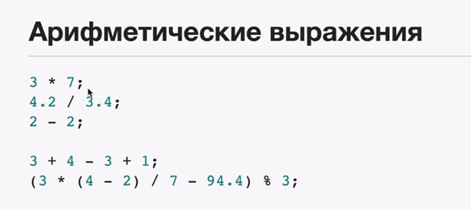
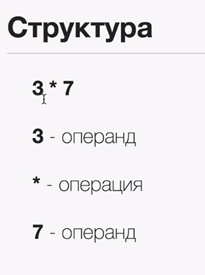
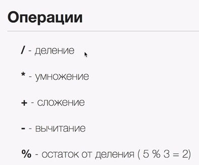
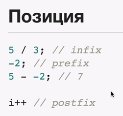
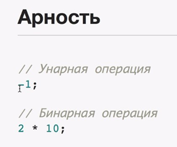

Арифметика в современных языках программирования идентична школьной.
Можно задавать операнды и операции.

Примеры простых операций. Вещественные числа записываются через "."

Операции в js.

Позиция операции относительно операнда

В js используюся все эти виды позиций.
Еще одна характеристика операций.
Арность - сколько операндов в операции
